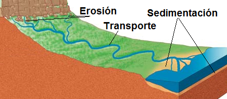
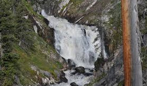
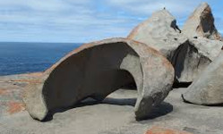
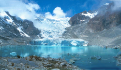
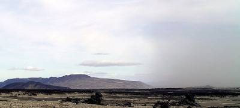
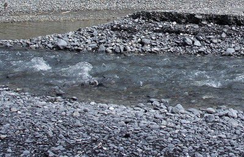

Procesos de transformación de relieve
El viento y el agua, en todas sus formas, desgastan las formas del relieve mediante tres procesos geológicos: la erosión, el transporte y la sedimentación.
 |
| Imagen de elaboración propia |
Erosión
La erosión es el desgaste que se produce en la superficie de rocas, suelos o materiales en general por la acción de agentes externos (como el viento o el agua) o por la fricción continua de otros cuerpos.
Se diferencia de la meteorización en que ésta es estática mientras que la erosión implica un transporte del material desgastado.
La erosión del suelo normalmente reduce su fertilidad ya que su acción provoca que los materiales pierdan minerales y materia orgánica.
Los principales agentes erosivos son:
- El agua. Desprotege el suelo de la vegetación. Al aparecer las lluvias, sobre todo si éstas son torrenciales, el agua arrastra las partículas del suelo hacia arroyos y ríos. Como consecuencia, el suelo pierde su capa superficial y la materia orgánica, entrando en un proceso de deterioro que puede acabar en desertización.
- El viento. Pule, desgasta y arrastra las partículas de suelo y de roca. Un ejemplo de esta acción son los paisajes generados en zonas áridas y desérticas.
- Los glaciares. Son enormes masas de hielo que se desplazan lentamente y desgastan los terrenos por los que se deslizan. El hielo es capaz de cortar o arrancar enormes rocas con mucha más fuerza que otros agentes erosivos.
 |
 |
 |
||
| El agua como agente erosivo Imagen en Pixabay bajo Dominio Público |
El viento como agente erosivo Imagen en Pixabay bajo Dominio Público |
Un glaciar como agente erosivo Imagen deBjork en Wikimedia Commons bajo CC |
Transporte
El transporte es el arrastre de materiales erosionados de un lugar a otro para ser sedimentados.
Distinguimos dos tipos de transporte:
- Transporte de sólidos, que a su vez puede ser:
- Arrastre o reptación: los agentes implicados son el agua, el viento y el hielo y es el arrastre de materiales pesados, sin levantarlos del suelo, dejando marcas en el suelo.
- Rodadura: Es un caso particular de arrastre cuyo su efecto es el de dejar la superficie del material arrastrado redondeada.
- Suspensión: el aire o el agua transportan partículas muy finas que no se depositan en el suelo. Los agentes de transporte son el agua, el viento y el hielo.
- Transporte en disolución: es el transporte de materiales que se disuelven en agua
 |
| Transporte de partículas en suspensión Imagen de Lauren Deschodt en Wikimedia Commons bajo licencia CC |
Sedimentación
La sedimentación consiste en el almacenamiento de materiales erosionados y transportados.
Las características de los depósitos o sedimentos dependen de la naturaleza del agente de transporte y el material se deposita debido a la disminución de la fuerza transportadora de dicho agente. La gravedad es la fuerza responsable de la sedimentación.
La sedimentación puede ocurrir en cualquier lugar de la superficie terrestre donde haya erosión, y, básicamente, puede ser de tres tipos:
- Marina, se forman depósitos en la plataforma continental y en las zonas abisales.
- Continental, se acumulan materiales a los pies de las cadenas montañosas, en los glaciares, a lo largo de las cuencas de los ríos y en los desiertos.
- De transición, que es la sedimentación que tiene lugar en puntos de contacto entre el mar y los continentes, como las zonas pantanosas y los deltas.
 |
| Sedimentos en un río Imagen de Woudleoper en Wikimedia Commons bajo Dominio Público |
El depósito de materiales se produce en zonas hundidas, llamadas cuencas sedimentarias, donde los sedimentos pueden generar rocas sedimentarias mediante un proceso llamado diagénesis.